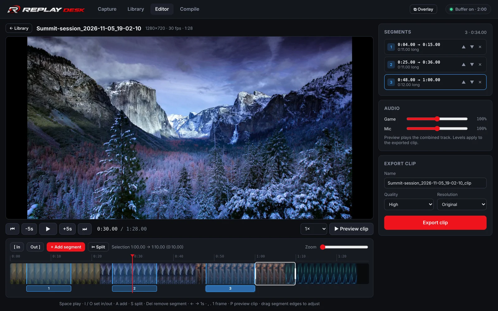
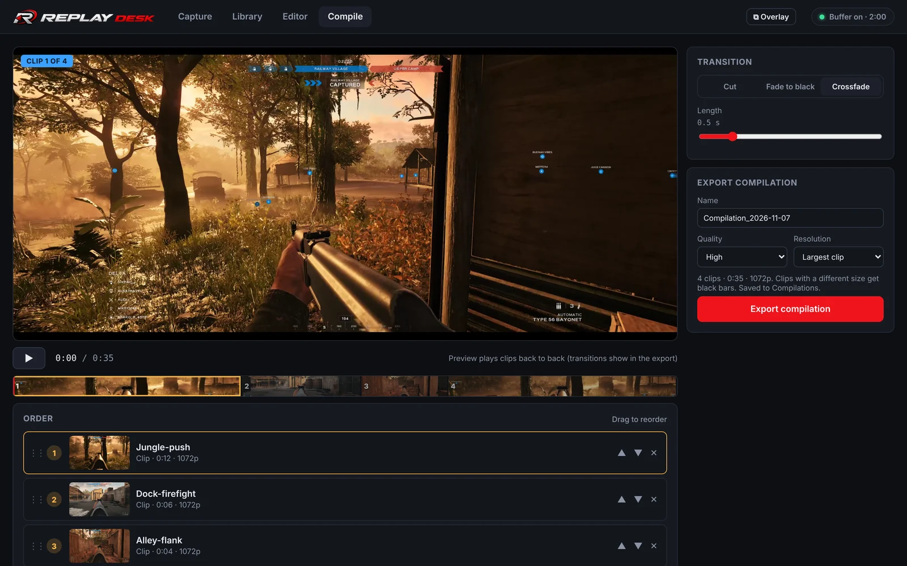
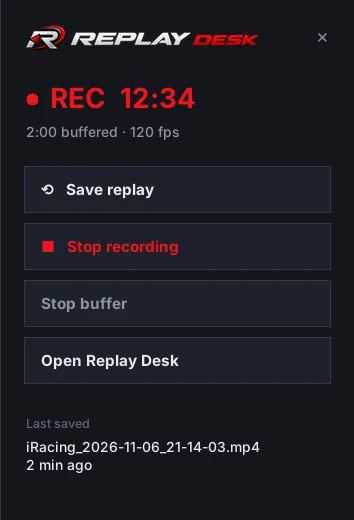
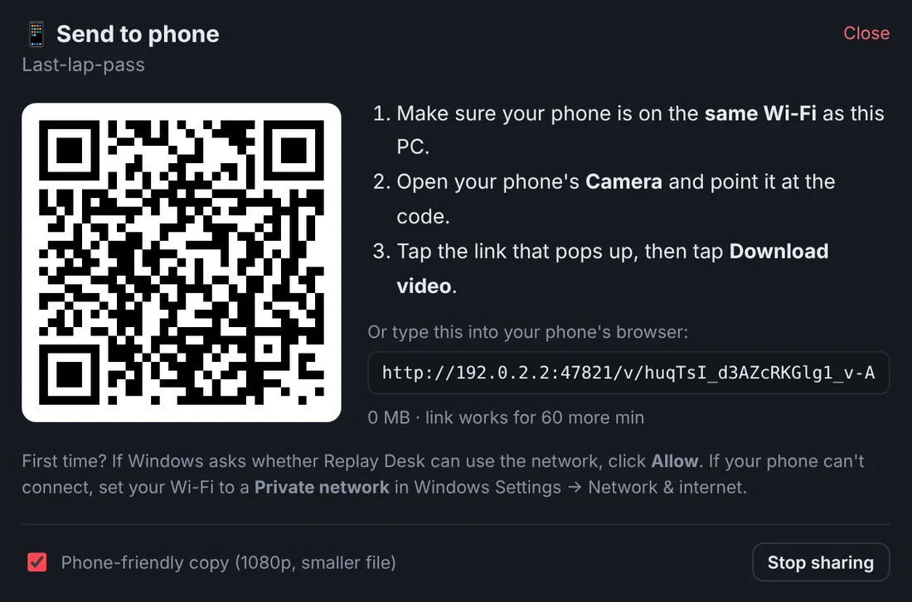

Everything after the moment
Record in the background, save the moment, then trim it, combine it with other clips and share it, all in one app.
Clip editor: cut it down to the good part
Open any replay or recording, mark where the action starts and ends, and keep as many pieces as you like. They're joined into one clip in the order you choose.
Your voice and the game sound are recorded on separate tracks, so you can turn your mic down or mute it without touching the game.

Highlight maker: stitch your best moments together
Pick a few clips, drag them into order, choose a cut, fade or crossfade, and export one highlight video. Clips from different games and resolutions are matched up for you.

In-game overlay: controls that slide out over your game
Press your overlay hotkey and a control panel slides in from the side of the screen with Save replay, Record and the buffer switch, plus a live recording timer. Press it again and it tucks away.
It works over fullscreen and borderless games, and clicking it doesn't pull focus from your game. Prefer a small floating panel instead? Switch styles in Settings.

Send to phone: no cables, no uploads
Click the phone button on any video and scan the code with your camera. The video downloads over your home Wi-Fi, already shrunk to a phone-friendly size. Nothing is uploaded anywhere.

- Encoded on your graphics card
- Uses the video encoder built into NVIDIA (NVENC) and AMD (AMF) cards, with a CPU option (x264) for other PCs.
- Files named after the game
- Replays save as iRacing_2026-11-04_21-16-56.mp4, not Video 37.mp4.
- Your keys, your way
- Set any hotkeys you like for saving replays, recording and the overlay.
- Any length
- Keep the last 30 seconds up to the last 20 minutes, or record a whole session. 30, 60 or 120 fps.
- Free updates, forever
- Replay Desk tells you when a new version is ready and installs it in one click. Every future update is included.
- Stays on your PC
- No account, no cloud. Your videos never leave your computer unless you send them.
Questions
What do I need to run it?
A 64-bit Windows 10 or 11 PC. An NVIDIA or AMD graphics card is best because its built-in video encoder does the recording. Replay Desk starts on the NVIDIA encoder; on an AMD card choose AMD AMF, or on a PC without either choose x264 (CPU), under Settings → Encoder. See the full requirements.
Windows says "Windows protected your PC". Is that normal?
Yes. Windows shows that for new apps from small developers that haven't built up a reputation yet. Click More info, then Run anyway. You'll only see it once.
Will it slow my game down?
Replay Desk records with the separate video encoder built into NVIDIA and AMD graphics cards, which keeps the extra load on your game low. If a game already pushes your graphics card to 100%, capping its frame rate slightly or recording at 60 fps keeps both the game and the recording smooth.
Does the overlay work in fullscreen games?
Yes, in most games. The side panel slides out over fullscreen, borderless and windowed games on Windows 10 and 11. A small number of older games use a special exclusive fullscreen mode where Windows doesn't allow anything on top. Your hotkeys still save replays and start recordings there, and a short sound confirms each one.
How do updates work?
Replay Desk checks for new versions on its own. When one is ready, a banner shows what's new and Update now installs it and reopens the app in a few seconds. You can also turn on automatic updates in Settings. Updates are free for life, and your settings, hotkeys and videos are always kept. You can read what changed in each version in the release notes.
Can I change the hotkeys?
Yes. Every hotkey (save replay, start and stop recording, show the overlay) can be set to any key combination you like in Settings.
What happens when the trial ends?
Recording, saving replays, exporting and sending to your phone pause until you add a license key. Your saved videos stay right where they are, and you can still watch and find them.
I got a new PC. Can I move my license?
Yes. Each license works on up to 3 PCs at once. To move it, open Settings, choose Remove from this PC on the old one, and enter the key on the new one.
What does Replay Desk send over the internet?
Only two things: a check for new versions, and a check that your license key is valid. Your videos, settings and usage stay on your PC. See the privacy page.
How do I get help?
Email support@getreplaydesk.com with what happened and your Replay Desk version (shown in Settings). Questions about your license or purchase go to the same address.